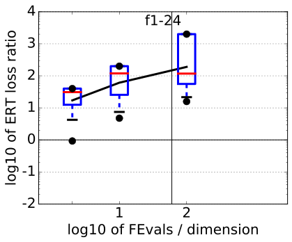
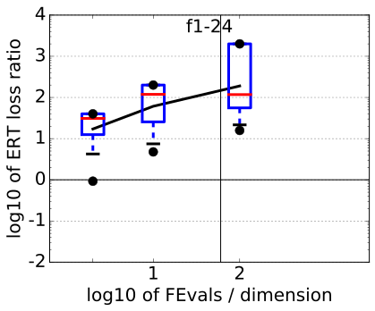

5-D
| #FEs/D | 0.5 | 1.2 | 3 | 10 | 50 | #succ |
|---|---|---|---|---|---|---|
| f1 | 2.5e+1:4.8 | 1.6e+1:7.6 | 1.0e-8:12 | 1.0e-8:12 | 1.0e-8:12 | 15/15 |
| 1.6 (2) | 2.6 (2) | ∞ | ∞ | ∞ 250 | 0/15 | |
| f2 | 1.6e+6:2.9 | 4.0e+5:11 | 4.0e+4:15 | 6.3e+2:58 | 1.0e-8:95 | 15/15 |
| 2.3 (2) | 1.5 (1) | 15 (14) | ∞ | ∞ 250 | 0/15 | |
| f3 | 1.6e+2:4.1 | 1.0e+2:15 | 6.3e+1:23 | 2.5e+1:73 | 1.0e+1:716 | 15/15 |
| 2.5 (1) | 2.0 (2) | 10 (11) | ∞ | ∞ 250 | 0/15 | |
| f4 | 2.5e+2:2.6 | 1.6e+2:10 | 1.0e+2:19 | 4.0e+1:65 | 1.6e+1:434 | 15/15 |
| 2.8 (2) | 1.8 (2) | 4.9 (12) | ∞ | ∞ 250 | 0/15 | |
| f5 | 6.3e+1:4.0 | 4.0e+1:10 | 1.0e-8:10 | 1.0e-8:10 | 1.0e-8:10 | 15/15 |
| 2.0 (2) | 3.1 (3) | ∞ | ∞ | ∞ 260 | 0/15 | |
| f6 | 1.0e+5:3.0 | 2.5e+4:8.4 | 1.0e+2:16 | 2.5e+1:54 | 2.5e-1:254 | 15/15 |
| 3.5 (4) | 4.2 (4) | 6.0 (6) | 36 (23) | ∞ 250 | 0/15 | |
| f7 | 1.6e+2:4.2 | 1.0e+2:6.2 | 2.5e+1:20 | 4.0e+0:54 | 1.0e+0:324 | 15/15 |
| 2.2 (1) | 2.8 (3) | 5.8 (3) | 38 (26) | ∞ 250 | 0/15 | |
| f8 | 1.0e+4:4.6 | 6.3e+3:6.8 | 1.0e+3:18 | 6.3e+1:54 | 1.6e+0:258 | 15/15 |
| 4.2 (4) | 3.4 (4) | 10 (8) | ∞ | ∞ 250 | 0/15 | |
| f9 | 2.5e+1:20 | 1.6e+1:26 | 1.0e+1:35 | 4.0e+0:62 | 1.6e-2:256 | 15/15 |
| ∞ | ∞ | ∞ | ∞ | ∞ 260 | 0/15 | |
| f10 | 2.5e+6:2.9 | 6.3e+5:7.0 | 2.5e+5:17 | 6.3e+3:54 | 2.5e+1:297 | 15/15 |
| 1.6 (2) | 2.0 (2) | 2.0 (0.9) | 14 (19) | ∞ 250 | 0/15 | |
| f11 | 1.0e+6:3.0 | 6.3e+4:6.2 | 6.3e+2:16 | 6.3e+1:74 | 6.3e-1:298 | 15/15 |
| 2.4 (2) | 7.2 (3) | 15 (18) | 12 (10) | ∞ 290 | 0/15 | |
| f12 | 4.0e+7:3.6 | 1.6e+7:7.6 | 4.0e+6:19 | 1.6e+4:52 | 1.0e+0:268 | 15/15 |
| 0.61 (0.7) | 2.8 (6) | 11 (19) | ∞ | ∞ 250 | 0/15 | |
| f13 | 1.0e+3:2.8 | 6.3e+2:8.4 | 4.0e+2:17 | 6.3e+1:52 | 6.3e-2:264 | 15/15 |
| 1.6 (1) | 4.2 (4) | 7.7 (14) | ∞ | ∞ 250 | 0/15 | |
| f14 | 1.6e+1:3.0 | 1.0e+1:10 | 6.3e+0:15 | 2.5e-1:53 | 1.0e-5:251 | 15/15 |
| 3.4 (4) | 1.8 (2) | 2.8 (2) | ∞ | ∞ 250 | 0/15 | |
| f15 | 1.6e+2:3.0 | 1.0e+2:13 | 6.3e+1:24 | 4.0e+1:55 | 1.6e+1:289 | 5/5 |
| 5.0 (13) | 2.5 (3) | 12 (8) | 40 (75) | ∞ 250 | 0/15 | |
| f16 | 4.0e+1:4.8 | 2.5e+1:16 | 1.6e+1:46 | 1.0e+1:120 | 4.0e+0:334 | 15/15 |
| 1.2 (2) | 1.7 (1) | 1.1 (1.0) | 2.0 (2) | ∞ 250 | 0/15 | |
| f17 | 1.0e+1:5.2 | 6.3e+0:26 | 4.0e+0:57 | 2.5e+0:110 | 6.3e-1:412 | 15/15 |
| 3.2 (2) | 4.4 (5) | 7.4 (11) | ∞ | ∞ 250 | 0/15 | |
| f18 | 6.3e+1:3.4 | 4.0e+1:7.2 | 2.5e+1:20 | 1.6e+1:58 | 1.6e+0:318 | 15/15 |
| 1.9 (1) | 2.7 (0.8) | 4.6 (7) | 7.6 (6) | ∞ 250 | 0/15 | |
| f19 | 1.6e-1:172 | 1.0e-1:242 | 6.3e-2:675 | 4.0e-2:3078 | 2.5e-2:4946 | 15/15 |
| ∞ | ∞ | ∞ | ∞ | ∞ 250 | 0/15 | |
| f20 | 6.3e+3:5.1 | 4.0e+3:8.4 | 4.0e+1:15 | 2.5e+0:69 | 1.0e+0:851 | 15/15 |
| 1.9 (1) | 3.1 (4) | 25 (26) | ∞ | ∞ 250 | 0/15 | |
| f21 | 4.0e+1:3.9 | 2.5e+1:11 | 1.6e+1:31 | 6.3e+0:73 | 1.6e+0:347 | 5/5 |
| 0.98 (0.4) | 1.6 (2) | 2.8 (7) | 10 (15) | ∞ 250 | 0/15 | |
| f22 | 6.3e+1:3.6 | 4.0e+1:15 | 2.5e+1:32 | 1.0e+1:71 | 1.6e+0:341 | 5/5 |
| 1.9 (3) | 1.5 (1) | 3.3 (4) | 4.0 (5) | ∞ 250 | 0/15 | |
| f23 | 1.0e+1:3.0 | 6.3e+0:9.0 | 4.0e+0:33 | 2.5e+0:84 | 1.0e+0:518 | 15/15 |
| 1.8 (4) | 2.8 (5) | 2.5 (1) | 7.1 (6) | ∞ 250 | 0/15 | |
| f24 | 6.3e+1:15 | 4.0e+1:37 | 4.0e+1:37 | 2.5e+1:118 | 1.6e+1:692 | 15/15 |
| 7.9 (7) | 24 (21) | 24 (18) | ∞ | ∞ 250 | 0/15 |
20-D
| #FEs/D | 0.5 | 1.2 | 3 | 10 | 50 | #succ |
|---|---|---|---|---|---|---|
| f1 | 2.5e+1:4.8 | 1.6e+1:7.6 | 1.0e-8:12 | 1.0e-8:12 | 1.0e-8:12 | 15/15 |
| 1.6 (2) | 2.6 (2) | ∞ | ∞ | ∞ 250 | 0/15 | |
| f2 | 1.6e+6:2.9 | 4.0e+5:11 | 4.0e+4:15 | 6.3e+2:58 | 1.0e-8:95 | 15/15 |
| 2.3 (2) | 1.5 (1) | 15 (14) | ∞ | ∞ 250 | 0/15 | |
| f3 | 1.6e+2:4.1 | 1.0e+2:15 | 6.3e+1:23 | 2.5e+1:73 | 1.0e+1:716 | 15/15 |
| 2.5 (1) | 2.0 (2) | 10 (11) | ∞ | ∞ 250 | 0/15 | |
| f4 | 2.5e+2:2.6 | 1.6e+2:10 | 1.0e+2:19 | 4.0e+1:65 | 1.6e+1:434 | 15/15 |
| 2.8 (2) | 1.8 (2) | 4.9 (12) | ∞ | ∞ 250 | 0/15 | |
| f5 | 6.3e+1:4.0 | 4.0e+1:10 | 1.0e-8:10 | 1.0e-8:10 | 1.0e-8:10 | 15/15 |
| 2.0 (2) | 3.1 (3) | ∞ | ∞ | ∞ 260 | 0/15 | |
| f6 | 1.0e+5:3.0 | 2.5e+4:8.4 | 1.0e+2:16 | 2.5e+1:54 | 2.5e-1:254 | 15/15 |
| 3.5 (4) | 4.2 (4) | 6.0 (6) | 36 (23) | ∞ 250 | 0/15 | |
| f7 | 1.6e+2:4.2 | 1.0e+2:6.2 | 2.5e+1:20 | 4.0e+0:54 | 1.0e+0:324 | 15/15 |
| 2.2 (1) | 2.8 (3) | 5.8 (3) | 38 (26) | ∞ 250 | 0/15 | |
| f8 | 1.0e+4:4.6 | 6.3e+3:6.8 | 1.0e+3:18 | 6.3e+1:54 | 1.6e+0:258 | 15/15 |
| 4.2 (4) | 3.4 (4) | 10 (8) | ∞ | ∞ 250 | 0/15 | |
| f9 | 2.5e+1:20 | 1.6e+1:26 | 1.0e+1:35 | 4.0e+0:62 | 1.6e-2:256 | 15/15 |
| ∞ | ∞ | ∞ | ∞ | ∞ 260 | 0/15 | |
| f10 | 2.5e+6:2.9 | 6.3e+5:7.0 | 2.5e+5:17 | 6.3e+3:54 | 2.5e+1:297 | 15/15 |
| 1.6 (2) | 2.0 (2) | 2.0 (0.9) | 14 (19) | ∞ 250 | 0/15 | |
| f11 | 1.0e+6:3.0 | 6.3e+4:6.2 | 6.3e+2:16 | 6.3e+1:74 | 6.3e-1:298 | 15/15 |
| 2.4 (2) | 7.2 (3) | 15 (18) | 12 (10) | ∞ 290 | 0/15 | |
| f12 | 4.0e+7:3.6 | 1.6e+7:7.6 | 4.0e+6:19 | 1.6e+4:52 | 1.0e+0:268 | 15/15 |
| 0.61 (0.7) | 2.8 (6) | 11 (19) | ∞ | ∞ 250 | 0/15 | |
| f13 | 1.0e+3:2.8 | 6.3e+2:8.4 | 4.0e+2:17 | 6.3e+1:52 | 6.3e-2:264 | 15/15 |
| 1.6 (1) | 4.2 (4) | 7.7 (14) | ∞ | ∞ 250 | 0/15 | |
| f14 | 1.6e+1:3.0 | 1.0e+1:10 | 6.3e+0:15 | 2.5e-1:53 | 1.0e-5:251 | 15/15 |
| 3.4 (4) | 1.8 (2) | 2.8 (2) | ∞ | ∞ 250 | 0/15 | |
| f15 | 1.6e+2:3.0 | 1.0e+2:13 | 6.3e+1:24 | 4.0e+1:55 | 1.6e+1:289 | 5/5 |
| 5.0 (13) | 2.5 (3) | 12 (8) | 40 (75) | ∞ 250 | 0/15 | |
| f16 | 4.0e+1:4.8 | 2.5e+1:16 | 1.6e+1:46 | 1.0e+1:120 | 4.0e+0:334 | 15/15 |
| 1.2 (2) | 1.7 (1) | 1.1 (1.0) | 2.0 (2) | ∞ 250 | 0/15 | |
| f17 | 1.0e+1:5.2 | 6.3e+0:26 | 4.0e+0:57 | 2.5e+0:110 | 6.3e-1:412 | 15/15 |
| 3.2 (2) | 4.4 (5) | 7.4 (11) | ∞ | ∞ 250 | 0/15 | |
| f18 | 6.3e+1:3.4 | 4.0e+1:7.2 | 2.5e+1:20 | 1.6e+1:58 | 1.6e+0:318 | 15/15 |
| 1.9 (1) | 2.7 (0.8) | 4.6 (7) | 7.6 (6) | ∞ 250 | 0/15 | |
| f19 | 1.6e-1:172 | 1.0e-1:242 | 6.3e-2:675 | 4.0e-2:3078 | 2.5e-2:4946 | 15/15 |
| ∞ | ∞ | ∞ | ∞ | ∞ 250 | 0/15 | |
| f20 | 6.3e+3:5.1 | 4.0e+3:8.4 | 4.0e+1:15 | 2.5e+0:69 | 1.0e+0:851 | 15/15 |
| 1.9 (1) | 3.1 (4) | 25 (26) | ∞ | ∞ 250 | 0/15 | |
| f21 | 4.0e+1:3.9 | 2.5e+1:11 | 1.6e+1:31 | 6.3e+0:73 | 1.6e+0:347 | 5/5 |
| 0.98 (0.4) | 1.6 (2) | 2.8 (7) | 10 (15) | ∞ 250 | 0/15 | |
| f22 | 6.3e+1:3.6 | 4.0e+1:15 | 2.5e+1:32 | 1.0e+1:71 | 1.6e+0:341 | 5/5 |
| 1.9 (3) | 1.5 (1) | 3.3 (4) | 4.0 (5) | ∞ 250 | 0/15 | |
| f23 | 1.0e+1:3.0 | 6.3e+0:9.0 | 4.0e+0:33 | 2.5e+0:84 | 1.0e+0:518 | 15/15 |
| 1.8 (4) | 2.8 (5) | 2.5 (1) | 7.1 (6) | ∞ 250 | 0/15 | |
| f24 | 6.3e+1:15 | 4.0e+1:37 | 4.0e+1:37 | 2.5e+1:118 | 1.6e+1:692 | 15/15 |
| 7.9 (7) | 24 (21) | 24 (18) | ∞ | ∞ 250 | 0/15 | |
| f1 | 6.3e+1:24 | 4.0e+1:42 | 1.0e-8:43 | 1.0e-8:43 | 1.0e-8:43 | 15/15 |
| 179 (141) | ∞ | ∞ | ∞ | ∞ 1200 | 0/15 | |
| f2 | 4.0e+6:29 | 2.5e+6:42 | 1.0e+5:65 | 1.0e+4:207 | 1.0e-8:412 | 15/15 |
| 0.89 (1) | 0.93 (1) | ∞ | ∞ | ∞ 1200 | 0/15 | |
| f3 | 6.3e+2:33 | 4.0e+2:44 | 1.6e+2:109 | 1.0e+2:255 | 2.5e+1:3277 | 15/15 |
| 13 (15) | ∞ | ∞ | ∞ | ∞ 1200 | 0/15 | |
| f4 | 6.3e+2:22 | 4.0e+2:91 | 2.5e+2:250 | 1.6e+2:332 | 6.3e+1:1927 | 15/15 |
| 75 (72) | ∞ | ∞ | ∞ | ∞ 1200 | 0/15 | |
| f5 | 2.5e+2:19 | 1.6e+2:34 | 1.0e-8:41 | 1.0e-8:41 | 1.0e-8:41 | 15/15 |
| 7.6 (14) | 125 (120) | ∞ | ∞ | ∞ 1200 | 0/15 | |
| f6 | 2.5e+5:16 | 6.3e+4:43 | 1.6e+4:62 | 1.6e+2:353 | 1.6e+1:1078 | 15/15 |
| 32 (49) | 75 (42) | 287 (180) | ∞ | ∞ 1200 | 0/15 | |
| f7 | 1.0e+3:11 | 4.0e+2:39 | 2.5e+2:74 | 6.3e+1:319 | 1.0e+1:1351 | 15/15 |
| 7.5 (49) | 36 (26) | ∞ | ∞ | ∞ 1200 | 0/15 | |
| f8 | 4.0e+4:19 | 2.5e+4:35 | 4.0e+3:67 | 2.5e+2:231 | 1.6e+1:1470 | 15/15 |
| 473 (463) | ∞ | ∞ | ∞ | ∞ 1200 | 0/15 | |
| f9 | 1.0e+2:357 | 6.3e+1:560 | 4.0e+1:684 | 2.5e+1:756 | 1.0e+1:1716 | 15/15 |
| ∞ | ∞ | ∞ | ∞ | ∞ 1200 | 0/15 | |
| f10 | 1.6e+6:15 | 1.0e+6:27 | 4.0e+5:70 | 6.3e+4:231 | 4.0e+3:1015 | 15/15 |
| 36 (18) | 54 (37) | ∞ | ∞ | ∞ 1200 | 0/15 | |
| f11 | 4.0e+4:11 | 2.5e+3:27 | 1.6e+2:313 | 1.0e+2:481 | 1.0e+1:1002 | 15/15 |
| 3.0 (5) | 3.2 (5) | 28 (21) | ∞ | ∞ 1200 | 0/15 | |
| f12 | 1.0e+8:23 | 6.3e+7:39 | 2.5e+7:76 | 4.0e+6:209 | 1.0e+1:1042 | 15/15 |
| 138 (95) | 215 (168) | ∞ | ∞ | ∞ 1200 | 0/15 | |
| f13 | 1.6e+3:28 | 1.0e+3:64 | 6.3e+2:79 | 4.0e+1:211 | 2.5e+0:1724 | 15/15 |
| 92 (97) | ∞ | ∞ | ∞ | ∞ 1200 | 0/15 | |
| f14 | 2.5e+1:15 | 1.6e+1:42 | 1.0e+1:75 | 1.6e+0:219 | 6.3e-4:1106 | 15/15 |
| 71 (64) | ∞ | ∞ | ∞ | ∞ 1200 | 0/15 | |
| f15 | 6.3e+2:15 | 4.0e+2:67 | 2.5e+2:292 | 1.6e+2:846 | 1.0e+2:1671 | 15/15 |
| 34 (26) | ∞ | ∞ | ∞ | ∞ 1200 | 0/15 | |
| f16 | 4.0e+1:26 | 2.5e+1:127 | 1.6e+1:540 | 1.6e+1:540 | 1.0e+1:1384 | 15/15 |
| 2.5 (1) | 12 (12) | ∞ | ∞ | ∞ 1200 | 0/15 | |
| f17 | 1.6e+1:11 | 1.0e+1:63 | 6.3e+0:305 | 4.0e+0:468 | 1.0e+0:1030 | 15/15 |
| 23 (12) | 26 (30) | ∞ | ∞ | ∞ 1200 | 0/15 | |
| f18 | 4.0e+1:116 | 2.5e+1:252 | 1.6e+1:430 | 1.0e+1:621 | 4.0e+0:1090 | 15/15 |
| 12 (10) | ∞ | ∞ | ∞ | ∞ 1200 | 0/15 | |
| f19 | 1.6e-1:2.5e5 | 1.0e-1:3.4e5 | 6.3e-2:3.4e5 | 4.0e-2:3.4e5 | 2.5e-2:3.4e5 | 3/15 |
| ∞ | ∞ | ∞ | ∞ | ∞ 1200 | 0/15 | |
| f20 | 1.6e+4:38 | 1.0e+4:42 | 2.5e+2:62 | 2.5e+0:250 | 1.6e+0:2536 | 15/15 |
| 103 (148) | 410 (363) | ∞ | ∞ | ∞ 1200 | 0/15 | |
| f21 | 6.3e+1:36 | 4.0e+1:77 | 4.0e+1:77 | 1.6e+1:456 | 4.0e+0:1094 | 15/15 |
| 121 (91) | ∞ | ∞ | ∞ | ∞ 1200 | 0/15 | |
| f22 | 6.3e+1:45 | 4.0e+1:68 | 4.0e+1:68 | 1.6e+1:231 | 6.3e+0:1219 | 15/15 |
| ∞ | ∞ | ∞ | ∞ | ∞ 1200 | 0/15 | |
| f23 | 6.3e+0:29 | 4.0e+0:118 | 2.5e+0:306 | 2.5e+0:306 | 1.0e+0:1614 | 15/15 |
| 1.6 (0.7) | 7.3 (5) | ∞ | ∞ | ∞ 1200 | 0/15 | |
| f24 | 2.5e+2:208 | 1.6e+2:918 | 1.0e+2:6628 | 6.3e+1:9885 | 4.0e+1:31629 | 15/15 |
| ∞ | ∞ | ∞ | ∞ | ∞ 1200 | 0/15 |
Separable functions in 5-D
Misc. moderate functions in 5-D
Ill-conditioned functions in 5-D
Multi-modal functions in 5-D
Weak structure functions in 5-D
All functions in 5-D
Separable functions in 20-D
Misc. moderate functions in 20-D
Ill-conditioned functions in 20-D
Multi-modal functions in 20-D
Weak structure functions in 20-D
All functions in 20-D
 

f1–f24 in 5-D, maxFE/D=119
| #FEs/D | best | 10 % | 25 % | med | 75 % | 90 % |
|---|---|---|---|---|---|---|
| RLUS/D | 50 | 50 | 50 | 50 | 60 | 90 |
| 2 | 0.98 | 1.9 | 2.3 | 3.3 | 4.2 | 6.2 |
| 10 | 2.6 | 3.2 | 4.0 | 5.1 | 6.8 | 50 |
| 100 | 4.2 | 8.4 | 14 | 22 | 31 | 95 |
| 1e3 | 20 | 31 | 47 | 1.4e2 | 2.1e2 | 9.5e2 |
f1–f24 in 20-D, maxFE/D=60
| #FEs/D | best | 10 % | 25 % | med | 75 % | 90 % |
|---|---|---|---|---|---|---|
| RLUS/D | 60 | 60 | 60 | 60 | 60 | 60 |
| 2 | 0.93 | 3.3 | 12 | 31 | 40 | 40 |
| 10 | 4.8 | 7.4 | 23 | 1.2e2 | 2.0e2 | 2.0e2 |
| 100 | 16 | 17 | 54 | 1.2e2 | 2.0e3 | 2.0e3 |
Separable functions in 5-D and 20-D
Moderate functions in 5-D and 20-D
Ill-conditioned functions in 5-D and 20-D
Multi-modal functions in 5-D and 20-D
Weak structure functions in 5-D and 20-D
ERT loss ratios (see the previous figure for details). Each cross (+) represents a single function, the line is the geometric mean.